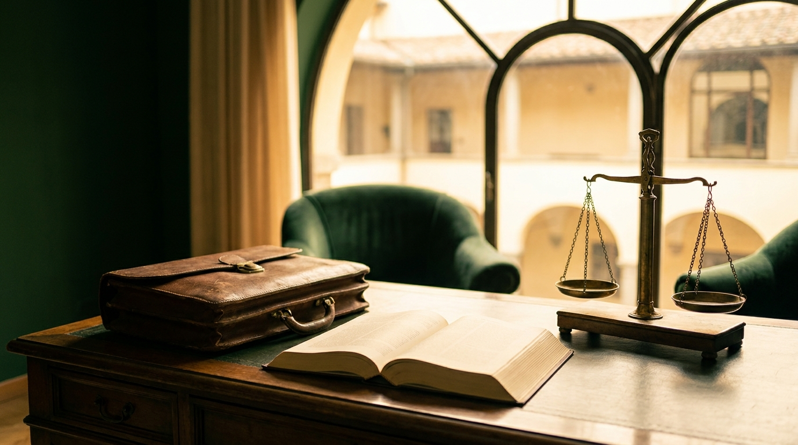

Sostituzione di un collega assente: quando scatta la promozione automatica
La Cassazione torna sul tema della sostituzione prolungata di un collega assente. Quando il dipendente svolge stabilmente mansioni superiori, può maturare il diritto alla promozione automatica e al relativo inquadramento. Una tutela che opera anche contro gli abusi datoriali, ma che conosce limiti precisi legati al motivo della sostituzione.

Il caso e perché conta
Capita spesso che un lavoratore venga chiamato a sostituire un collega assente. Quando la sostituzione si prolunga e comporta lo svolgimento di mansioni superiori rispetto a quelle di inquadramento, sorge una domanda concreta: il dipendente ha diritto a essere promosso?
La Corte di Cassazione ha ribadito il principio: l'assegnazione stabile a mansioni superiori può far scattare la cosiddetta promozione automatica. È un meccanismo che tutela il lavoratore contro l'utilizzo improprio della sua prestazione, evitando che svolga compiti più qualificati senza vederne riconosciuto il valore.
Inquadramento normativo
Il riferimento è l'art. 2103 del Codice civile, che disciplina le mansioni del lavoratore subordinato. La norma prevede che il dipendente possa essere adibito a mansioni superiori, ma che tale assegnazione, se si protrae oltre un certo periodo, diventi definitiva.
Nel testo vigente, l'assegnazione a mansioni superiori diviene stabile quando si protrae per il periodo fissato dai contratti collettivi o, in mancanza, per sei mesi continuativi. Decorso tale termine, il lavoratore ha diritto all'inquadramento superiore corrispondente alle mansioni effettivamente svolte.
Qui interviene l'eccezione decisiva. La promozione automatica non opera quando l'assegnazione è avvenuta in sostituzione di un lavoratore assente con diritto alla conservazione del posto. È il caso classico della sostituzione per malattia, maternità, aspettativa o ferie del collega: in queste ipotesi l'inquadramento superiore non si consolida, perché la mansione è destinata a tornare al titolare al suo rientro.
Il discrimine: il motivo della sostituzione
La differenza pratica è tutta nel motivo dell'assenza del collega sostituito.
Se il collega è assente per una causa che gli garantisce il diritto al posto, la sostituzione resta temporanea anche se dura a lungo: il sostituto matura il diritto alla retribuzione corrispondente alle mansioni svolte, ma non l'inquadramento definitivo.
Se invece la sostituzione non è riconducibile a un'assenza con conservazione del posto, oppure si protrae ben oltre l'effettiva necessità sostitutiva, il meccanismo dell'art. 2103 può attivarsi e portare alla promozione.
La Cassazione valorizza la sostanza sui formalismi. Non basta che il datore qualifichi l'incarico come "sostituzione": occorre verificare se esista davvero un collega assente da rimpiazzare e se l'assenza rientri tra quelle protette. In caso contrario, lo schermo della sostituzione non regge e l'inquadramento superiore si consolida.
Implicazioni pratiche per il lavoratore
Per il dipendente la conseguenza è doppia. Da un lato, anche durante una sostituzione temporanea legittima, spetta la retribuzione propria delle mansioni superiori effettivamente svolte, per tutto il periodo. Dall'altro, quando la sostituzione non è genuina o supera i confini della temporaneità, può maturare il diritto all'inquadramento stabile.
Per il datore di lavoro, l'attenzione va posta sulla gestione corretta delle sostituzioni: documentare il nominativo del sostituito, il titolo dell'assenza e la durata prevista è essenziale per evitare contestazioni sull'inquadramento.
Cosa fare in concreto
- Conserva le prove. Raccogli ordini di servizio, email, organigrammi e turni che attestino le mansioni effettivamente svolte e la loro durata continuativa.
- Verifica chi stai sostituendo. Accerta se il collega assente abbia o meno diritto alla conservazione del posto: da questo dipende l'eventuale consolidamento dell'inquadramento.
- Controlla il CCNL applicato. I contratti collettivi possono fissare il periodo oltre il quale l'assegnazione diventa definitiva: leggi la disciplina di categoria.
- Reagisci nei termini. I crediti retributivi e le pretese di inquadramento sono soggetti a prescrizione: non rinviare la richiesta formale al datore.
- Valuta una consulenza. Prima di agire, consigliamo di far esaminare la concreta sequenza delle mansioni svolte, perché l'esito dipende dai fatti specifici del rapporto.
La materia è casistica: l'esito di una richiesta di promozione automatica dipende dalla ricostruzione puntuale delle mansioni e dal titolo dell'assenza del collega sostituito.
---
*Contributo informativo a cura di Tamburro & Partners - Avv. Giuseppe Tamburro. Non costituisce parere legale.*
Ogni storia di lavoro ha i suoi tempi.
Se gestisci HR e vuoi un confronto su contenzioso, ispezioni o licenziamenti, scrivi allo studio. Ti rispondiamo entro un giorno lavorativo.